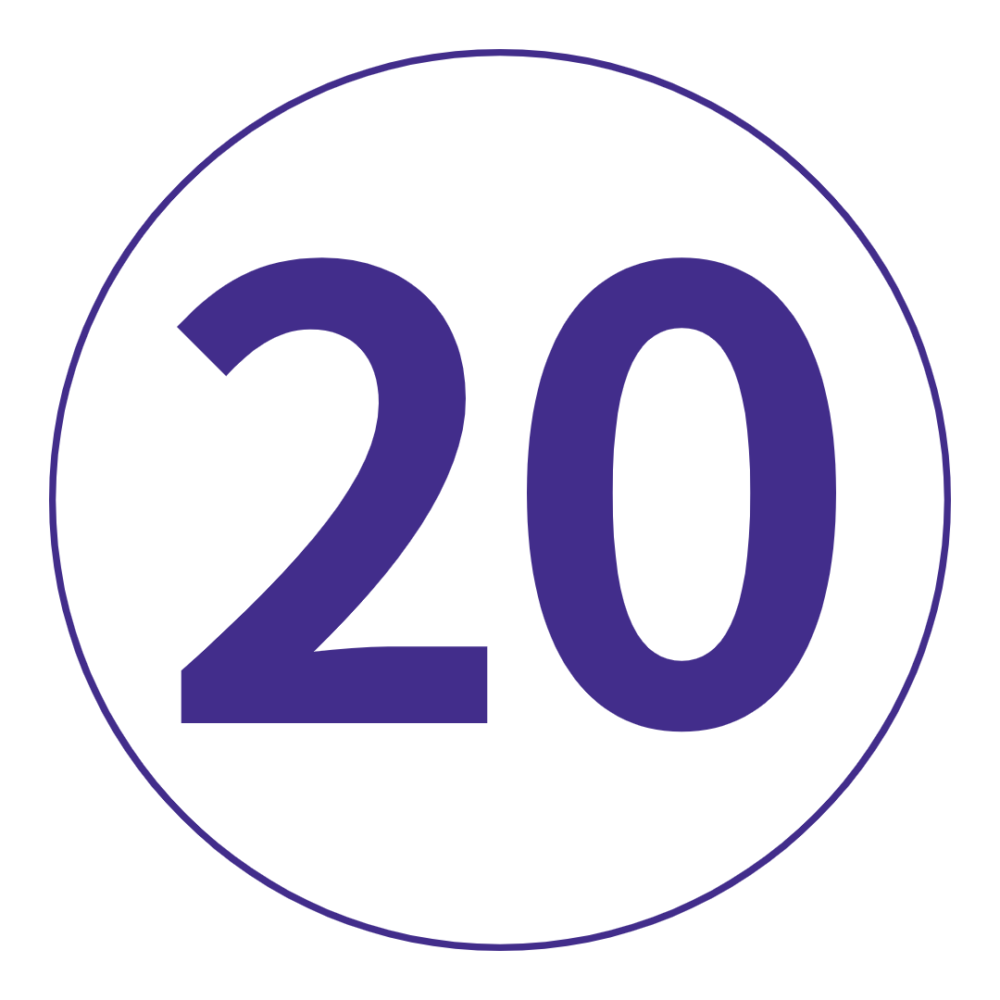

여행 개요
지도
TRIP VIBE = 현지 여행 리더와 함께하는 상징적인 명소와 심도 있는 모험.
대륙, 문화 및 요리가 혼합된 환상적인 터키는 여러분이 들어본 모든 것... 그리고 일부입니다. 인스타그램 계정의 풍선으로 가득 찬 하늘보다 더 깊이 들어가서 현지 카파도키아 가족과 함께 저녁 식사를 하거나 고대 그리스 도시인 에베소를 배회하고 론 파인에서 경의를 표하거나 페티예의 들쭉날쭉한 청록색 바다를 유람하는 것까지 진정한 터키를 발견하십시오. 연안.
아, 그리고 터키식 딜라이트와 케밥 말고도 먹을 것이 더 많습니다.
여행 일정
-
 터키 이스탄불
고대 유적. 다채로운 바자회. 중독성 있는 맛. 그리고 발견되기를 기다리는 독특한 문화. 터키에 오신 것을 환영합니다! 호텔에 체크인하고 갱단을 만나십시오. 우리는 혼혈이지만 모두가 함께 있어야 합니다. 오늘 밤, 현지 레스토랑에서 저녁 식사를 포함하여 터키식 사랑을 시작하고 첫날 해가 지면서 아야 소피아가 백만 가지 색조로 오렌지색으로 변하는 것을 지켜보십시오. 젠장, 잘 될거야.
터키 이스탄불
고대 유적. 다채로운 바자회. 중독성 있는 맛. 그리고 발견되기를 기다리는 독특한 문화. 터키에 오신 것을 환영합니다! 호텔에 체크인하고 갱단을 만나십시오. 우리는 혼혈이지만 모두가 함께 있어야 합니다. 오늘 밤, 현지 레스토랑에서 저녁 식사를 포함하여 터키식 사랑을 시작하고 첫날 해가 지면서 아야 소피아가 백만 가지 색조로 오렌지색으로 변하는 것을 지켜보십시오. 젠장, 잘 될거야.
키워드 공식 만찬 이스탄불
일어나서 빛나세요 – 만약 기도의 외침이 여러분을 깨우지 않았다면, 오늘에 대한 기대는 깨어날 것입니다. 우선, 도시의 상징물을 빨아들이는 도보여행. 우리는 탑카피 궁전에 있는 오스만 술탄 궁정과 누각을 돌아다닐 것이다. 히포드롬에 있는 비잔틴 오락을 위한 집을 돌아다녀야 합니다. 블루 모스크의 매혹적인 내부를 바라보아라. 바실리카 구덩이의 동굴 깊숙한 곳으로 들어가라. 그리고 아지아 소피아의 아름다움에 휩쓸렸다. 그럼? 나머지는 너에게 달렸어. 장신구, 등불, 양탄자, 그리고 그랜드 바자의 중간 노점들 사이에서 길을 잃으세요. 일디스 공원의 옛 정자 중 한 곳에서 터키식 커피를 홀짝입니다. 또는 아시아로 건너가는 여객선을 타고 탐험을 떠나십시오(예, 이 곳은 두 대륙을 가로지릅니다. 멋지지 않습니까?). 오늘 밤, 침 흘릴 만한 케밥을 찾거나 여러분의 여행자들과 미즈를 나누세요. 터키식 타파스 보드라고 생각해. 음.
이스탄불
일어나서 빛나세요 – 만약 기도의 외침이 여러분을 깨우지 않았다면, 오늘에 대한 기대는 깨어날 것입니다. 우선, 도시의 상징물을 빨아들이는 도보여행. 우리는 탑카피 궁전에 있는 오스만 술탄 궁정과 누각을 돌아다닐 것이다. 히포드롬에 있는 비잔틴 오락을 위한 집을 돌아다녀야 합니다. 블루 모스크의 매혹적인 내부를 바라보아라. 바실리카 구덩이의 동굴 깊숙한 곳으로 들어가라. 그리고 아지아 소피아의 아름다움에 휩쓸렸다. 그럼? 나머지는 너에게 달렸어. 장신구, 등불, 양탄자, 그리고 그랜드 바자의 중간 노점들 사이에서 길을 잃으세요. 일디스 공원의 옛 정자 중 한 곳에서 터키식 커피를 홀짝입니다. 또는 아시아로 건너가는 여객선을 타고 탐험을 떠나십시오(예, 이 곳은 두 대륙을 가로지릅니다. 멋지지 않습니까?). 오늘 밤, 침 흘릴 만한 케밥을 찾거나 여러분의 여행자들과 미즈를 나누세요. 터키식 타파스 보드라고 생각해. 음.
키워드 아침밥 + Trip Leader와 함께하는 이스탄불 도보 여행 + 톱카프 궁전 입장 + 아야 소피아 입장 + 바실리카 시스턴 입장 + 블루 모스크 입장 이스탄불-에스키셰히르
이스탄불에 작별 인사를 하십시오. 우리는 활기찬 도시인 Eskisehir(es-kee-sheh-heer)로 나아가고 있습니다. 문자 그대로 '오래된 도시'를 의미하는 이곳은 기원전 3000년으로 거슬러 올라가는 역사를 가지고 있습니다. 나만의 일을 하러 나가기 전에 전문 Trip Leader와 함께 오리엔테이션 워크에서 방향을 잡습니다. 몇 가지 제안이 필요하십니까? Porsuk 강 유역을 거닐어 보세요. 오래된 Odunpazari 분기를 확인하십시오. 그런 다음, 완벽하게 튀겨낸 고기 속 페이스트리인 çigbörek을 위해 현지 명소를 찾으세요. 예, 부탁합니다. 이곳의 대학 덕분에 밤의 유흥이 활기를 띠고 있습니다. 따라서 갱단을 모으고 바를 찾아 현지인처럼 발견할 준비를 하세요.
이스탄불-에스키셰히르
이스탄불에 작별 인사를 하십시오. 우리는 활기찬 도시인 Eskisehir(es-kee-sheh-heer)로 나아가고 있습니다. 문자 그대로 '오래된 도시'를 의미하는 이곳은 기원전 3000년으로 거슬러 올라가는 역사를 가지고 있습니다. 나만의 일을 하러 나가기 전에 전문 Trip Leader와 함께 오리엔테이션 워크에서 방향을 잡습니다. 몇 가지 제안이 필요하십니까? Porsuk 강 유역을 거닐어 보세요. 오래된 Odunpazari 분기를 확인하십시오. 그런 다음, 완벽하게 튀겨낸 고기 속 페이스트리인 çigbörek을 위해 현지 명소를 찾으세요. 예, 부탁합니다. 이곳의 대학 덕분에 밤의 유흥이 활기를 띠고 있습니다. 따라서 갱단을 모으고 바를 찾아 현지인처럼 발견할 준비를 하세요.
키워드 아침밥 + 트립 리더와 함께하는 에스키셰히르 오리엔테이션 워크 에스키셰히르-카파도키아
거짓말은 없습니다. 오늘은 운전을 하는 날입니다. 하지만 우리에게는 멋진 정거장이 있습니다. 첫 번째: 이 세상에 없던 Tuz Gölü(솔트 레이크라고도 함)를 확인하십시오. 그런 다음 지하로 내려가 카파도키아의 유명한 동굴 주거지를 엿볼 기회가 있습니다. 수세기 동안 은신처로 사용되었던 이 미로처럼 손으로 조각한 통로, 터널 및 방은 100% 탐험할 가치가 있습니다. 저희를 믿으세요. 모든 코치 낮잠과 동굴 탐험에서 약간 긴장을 느끼십니까? 우리는 당신을 얻었다. 나중에 선택적인 터키식 목욕탕 체험에 등록하십시오. 오스만 제국은 1405년부터 그것에 대해 열광했습니다. 의미? 잘해야합니다. 오늘 저녁에 포함된 저녁 식사는 최고의 터키 가정식입니다. 쿠션을 잡고 집어 넣으십시오. 이것은 진정한 의미의 것입니다.
에스키셰히르-카파도키아
거짓말은 없습니다. 오늘은 운전을 하는 날입니다. 하지만 우리에게는 멋진 정거장이 있습니다. 첫 번째: 이 세상에 없던 Tuz Gölü(솔트 레이크라고도 함)를 확인하십시오. 그런 다음 지하로 내려가 카파도키아의 유명한 동굴 주거지를 엿볼 기회가 있습니다. 수세기 동안 은신처로 사용되었던 이 미로처럼 손으로 조각한 통로, 터널 및 방은 100% 탐험할 가치가 있습니다. 저희를 믿으세요. 모든 코치 낮잠과 동굴 탐험에서 약간 긴장을 느끼십니까? 우리는 당신을 얻었다. 나중에 선택적인 터키식 목욕탕 체험에 등록하십시오. 오스만 제국은 1405년부터 그것에 대해 열광했습니다. 의미? 잘해야합니다. 오늘 저녁에 포함된 저녁 식사는 최고의 터키 가정식입니다. 쿠션을 잡고 집어 넣으십시오. 이것은 진정한 의미의 것입니다.
키워드 아침밥 + 공식 만찬 + Tuz Gölü (솔트 레이크)에서 사진 촬영 기회
추가 옵션 Saratli Underground City 방문: 20TL부터 / 터키식 목욕탕 체험: €25부터 카파도키아
Instagram에서 풍선으로 가득 찬 카파도키아의 하늘을 본 적이 있습니다. 이제 필터 없이 체험할 시간입니다. 옵션으로 제공되는 열기구를 타고 다른 세계의 계곡 위로 떠오르는 태양을 바라보며 감탄할 준비를 하세요. 그때? 우리는 괴레메 국립공원(Göreme National Park)으로 향하여 더 많은 4세기 주거지, 암석으로 조각된 교회 및 비잔틴 예술품을 탐험할 것입니다. 러브 밸리의 인상적인 구조를 확인하기 전에 우치사르 성의 모든 전망을 감상하세요. 오늘 밤, 프로들이 전통 터키 댄스 쇼에서 어떻게 하는지 보여드리겠습니다. 면책 조항: 감독 없이 Dervish 소용돌이를 시도하지 마십시오.
카파도키아
Instagram에서 풍선으로 가득 찬 카파도키아의 하늘을 본 적이 있습니다. 이제 필터 없이 체험할 시간입니다. 옵션으로 제공되는 열기구를 타고 다른 세계의 계곡 위로 떠오르는 태양을 바라보며 감탄할 준비를 하세요. 그때? 우리는 괴레메 국립공원(Göreme National Park)으로 향하여 더 많은 4세기 주거지, 암석으로 조각된 교회 및 비잔틴 예술품을 탐험할 것입니다. 러브 밸리의 인상적인 구조를 확인하기 전에 우치사르 성의 모든 전망을 감상하세요. 오늘 밤, 프로들이 전통 터키 댄스 쇼에서 어떻게 하는지 보여드리겠습니다. 면책 조항: 감독 없이 Dervish 소용돌이를 시도하지 마십시오.
키워드 아침밥 + 러브 밸리 방문 + Avcilar Valley에서 사진 촬영 기회
추가 옵션 괴레메 야외 박물관 방문: 35 TL부터 / Uchisar 성 방문: 10 TL부터 / 터키 전통 무용 쇼: €40부터 카파도키아-안탈리아
앞으로! 우리는 사이키델릭한 암석 계곡을 반짝이는 청록색 해변으로 바꾸고 있습니다. 오늘의 안탈리아로의 드라이브는 zzz를 따라잡고, 음악을 펌핑하고, 집세에 메시지를 보낼 수 있는 기회입니다(나중에 너무 바빠질 것입니다. 저희를 믿으세요). 호텔에 짐을 버리고 잘 아는 여행 리더와 함께 오리엔테이션을 시작하십시오. 그런 다음: 나머지는 당신에게 달려 있습니다. Konyaalti 해변에서 약간의 광선을 흡수하십시오. 현지 터키식 목욕탕에서 휴식을 취하십시오. Kaleiçi의 조약돌 거리를 탐험하십시오. 신선한 AF 해산물과 meze를 찾으십시오. 그런 다음 메드의 일몰을 모두 감상할 수 있는 Karaalioglu 공원으로 향합니다.
카파도키아-안탈리아
앞으로! 우리는 사이키델릭한 암석 계곡을 반짝이는 청록색 해변으로 바꾸고 있습니다. 오늘의 안탈리아로의 드라이브는 zzz를 따라잡고, 음악을 펌핑하고, 집세에 메시지를 보낼 수 있는 기회입니다(나중에 너무 바빠질 것입니다. 저희를 믿으세요). 호텔에 짐을 버리고 잘 아는 여행 리더와 함께 오리엔테이션을 시작하십시오. 그런 다음: 나머지는 당신에게 달려 있습니다. Konyaalti 해변에서 약간의 광선을 흡수하십시오. 현지 터키식 목욕탕에서 휴식을 취하십시오. Kaleiçi의 조약돌 거리를 탐험하십시오. 신선한 AF 해산물과 meze를 찾으십시오. 그런 다음 메드의 일몰을 모두 감상할 수 있는 Karaalioglu 공원으로 향합니다.
키워드 아침밥 + Trip Leader와 함께하는 안탈리아 오리엔테이션 워크 안탈리아-페티예
우리가 Fethiye(feh-tee-yeh)로 가는 길을 만들기 전에 마지막으로 한 번만 더 담그십시오. 하지만 먼저, 우리는 세계에서 가장 깊은 협곡 중 하나에서 피트 스탑을 만들 것입니다. 당신은 당신의 카메라를 충전, 맞죠? 우뚝 솟은 협곡 벽과 급류로 둘러싸인 수정처럼 맑은 사클리켄트 협곡(Saklikent Gorge)의 선택적인 도강 투어에 참여하세요. 섹시한 암초 신발은 필수입니다. 또는 터키 차를 마시며 고요함을 즐기십시오. 나중에 우리는 F-Town의 청록색 낙원으로 굴러 갈 것입니다. 현지인들은 이곳이 신이 지구에 선물한 곳이라고 말합니다. 해변을 보면 그 이유를 알게 될 것입니다. 오늘 밤에는 갱단과 함께 저녁 식사를 하고 항구 너머로 지는 일몰을 감상하세요. 이것은 살아있는 것입니다.
안탈리아-페티예
우리가 Fethiye(feh-tee-yeh)로 가는 길을 만들기 전에 마지막으로 한 번만 더 담그십시오. 하지만 먼저, 우리는 세계에서 가장 깊은 협곡 중 하나에서 피트 스탑을 만들 것입니다. 당신은 당신의 카메라를 충전, 맞죠? 우뚝 솟은 협곡 벽과 급류로 둘러싸인 수정처럼 맑은 사클리켄트 협곡(Saklikent Gorge)의 선택적인 도강 투어에 참여하세요. 섹시한 암초 신발은 필수입니다. 또는 터키 차를 마시며 고요함을 즐기십시오. 나중에 우리는 F-Town의 청록색 낙원으로 굴러 갈 것입니다. 현지인들은 이곳이 신이 지구에 선물한 곳이라고 말합니다. 해변을 보면 그 이유를 알게 될 것입니다. 오늘 밤에는 갱단과 함께 저녁 식사를 하고 항구 너머로 지는 일몰을 감상하세요. 이것은 살아있는 것입니다.
키워드 아침밥 + 공식 만찬 + Saklikent 협곡 방문
추가 옵션 Saklikent 협곡 투어: 10TL부터 페티예
당신은 24시간 동안 당신만의 일을 해야 합니다. 몇 가지 제안이 필요하십니까? 섬 주변의 선택적인 크루즈에 등록하고 전통적인 터키식 굴레를 타고 태양을 숭배하는 하루를 보내십시오. 청록색 물에 상쾌하게 몸을 담그고 갑판 위에서 약간의 zzz를 잡는 사이에 놀라운 전망에 눈을 돌립니다. 마른 땅을 선호합니까? 쉬운. 역사 애호가들은 유령 도시 Kayaköy로 여행을 떠나야 합니다. 아드레날린 애호가들은 Zirve Bar에서 패러글라이더가 Mt Babadag에서 자신의 일을 하는 것을 볼 수 있습니다. 그런 다음 Amyntas Rock Tomb까지 하이킹을 하면서 바클라바의 두 번째 도움을 불태우십시오. 최고의 팁: 모든 일몰을 보려면 나중에 가세요.
페티예
당신은 24시간 동안 당신만의 일을 해야 합니다. 몇 가지 제안이 필요하십니까? 섬 주변의 선택적인 크루즈에 등록하고 전통적인 터키식 굴레를 타고 태양을 숭배하는 하루를 보내십시오. 청록색 물에 상쾌하게 몸을 담그고 갑판 위에서 약간의 zzz를 잡는 사이에 놀라운 전망에 눈을 돌립니다. 마른 땅을 선호합니까? 쉬운. 역사 애호가들은 유령 도시 Kayaköy로 여행을 떠나야 합니다. 아드레날린 애호가들은 Zirve Bar에서 패러글라이더가 Mt Babadag에서 자신의 일을 하는 것을 볼 수 있습니다. 그런 다음 Amyntas Rock Tomb까지 하이킹을 하면서 바클라바의 두 번째 도움을 불태우십시오. 최고의 팁: 모든 일몰을 보려면 나중에 가세요.
키워드 아침밥
추가 옵션 페티예 섬 일일 크루즈: €45부터페티예에서 파묵칼레 경유 쿠사다시까지
여기는 온천이 아니라 온천입니다. 우리는 파묵칼레의 세계 유산에 등재된 '면 성'을 확인하기 위해 내륙으로 향합니다. 번쩍이는 흰색 테라스는 모든 사교계에 있지만(눈이 휘둥그레짐), 직접 보면 훨씬 더 놀랍습니다. 저희를 믿으세요. 미네랄이 풍부한 따뜻한 물에 몸을 담그십시오. 히에라폴리스의 고대 그리스-로마 유적을 탐험하세요. 또는 골동품 수영장에 몸을 담그고 내면의 클레오파트라를 풀어보세요. 그때? 반짝이는 에게해 해안을 따라 저녁 식사와 옥상 칵테일이 포함된 쿠사다시(Kusadasi)를 위한 GPS 설정이 있습니다.
키워드 아침밥 + 공식 만찬 + 히에라폴리스 유적 방문 + 파묵칼레 자연 공원 방문 쿠사다시(에베소 포함)
목록에서 고대 세계의 불가사의를 체크할 준비가 되셨습니까? 그렇게 생각. 에베소 유적을 둘러보면서 모든 인디아나 존스의 분위기를 느껴보세요. 가이드 투어에 참여하거나 하드리아누스 신전, 잊혀진 시청, 거대한 원형 극장 및 동상이 늘어선 큐레테스 웨이를 혼자 탐험하세요. 아르테미스 신전을 멍하니 바라보지 않고 떠나지 마십시오. 이것은 기억 은행을 위한 것입니다. Kusadasi로 돌아오면 오후는 당신의 시간입니다. 비둘기 섬으로 건너 비잔틴 요새를 확인하십시오(새는 포함되지 않음). 마을의 해변에 가거나 남쪽으로 여행하여 북적이는 Kadinlar Denizi로 가십시오. 그랜드 바자에서 흥정을 해보세요. 아니면 신선한 해산물보다 더 신선한 해산물을 찾기 위해 항구 레스토랑을 찾아보세요. 이것이 당신이 온 이유입니다.
쿠사다시(에베소 포함)
목록에서 고대 세계의 불가사의를 체크할 준비가 되셨습니까? 그렇게 생각. 에베소 유적을 둘러보면서 모든 인디아나 존스의 분위기를 느껴보세요. 가이드 투어에 참여하거나 하드리아누스 신전, 잊혀진 시청, 거대한 원형 극장 및 동상이 늘어선 큐레테스 웨이를 혼자 탐험하세요. 아르테미스 신전을 멍하니 바라보지 않고 떠나지 마십시오. 이것은 기억 은행을 위한 것입니다. Kusadasi로 돌아오면 오후는 당신의 시간입니다. 비둘기 섬으로 건너 비잔틴 요새를 확인하십시오(새는 포함되지 않음). 마을의 해변에 가거나 남쪽으로 여행하여 북적이는 Kadinlar Denizi로 가십시오. 그랜드 바자에서 흥정을 해보세요. 아니면 신선한 해산물보다 더 신선한 해산물을 찾기 위해 항구 레스토랑을 찾아보세요. 이것이 당신이 온 이유입니다.
키워드 아침밥 + 고대 그리스 도시 에베소 입구
추가 옵션 고대 그리스 도시 에베소 가이드 투어: 60TL부터 트로이를 경유하여 쿠사다시에서 차나칼레로
고대 고고학 유적지에서 다른 유적지로 – 우리는 인상적인 페르가몬 아크로폴리스(Pergamon Acropolis)로 가는 길을 만들고 있습니다. 케이블카를 타고 정상에 오르면서 모든 파노라마를 감상하세요. 그런 다음: 거대한 대리석 기둥을 거닐고 고대 도서관, 제단 및 사원을 탐험하고 세계에서 가장 가파른 고대 원형 극장의 전망을 만끽하세요. 팁: 아래를 내려다보지 마십시오. 그 후, 우리는 트로이의 폐허를 바라보고 있습니다. Brad Pitt의 기름진 식스팩 덕분에 이야기의 일부를 알 수 있지만, 이 전설적인 도시의 나머지 부분을 돌아다니는 동안 전문가 Trip Leader가 실제 장면을 설정하는 데 도움을 줄 것입니다. 우리는 오늘 밤 해안가 도시 Çanakkale에서 일을 마무리할 예정입니다.
트로이를 경유하여 쿠사다시에서 차나칼레로
고대 고고학 유적지에서 다른 유적지로 – 우리는 인상적인 페르가몬 아크로폴리스(Pergamon Acropolis)로 가는 길을 만들고 있습니다. 케이블카를 타고 정상에 오르면서 모든 파노라마를 감상하세요. 그런 다음: 거대한 대리석 기둥을 거닐고 고대 도서관, 제단 및 사원을 탐험하고 세계에서 가장 가파른 고대 원형 극장의 전망을 만끽하세요. 팁: 아래를 내려다보지 마십시오. 그 후, 우리는 트로이의 폐허를 바라보고 있습니다. Brad Pitt의 기름진 식스팩 덕분에 이야기의 일부를 알 수 있지만, 이 전설적인 도시의 나머지 부분을 돌아다니는 동안 전문가 Trip Leader가 실제 장면을 설정하는 데 도움을 줄 것입니다. 우리는 오늘 밤 해안가 도시 Çanakkale에서 일을 마무리할 예정입니다.
키워드 아침밥 + 페르가몬 아크로폴리스 입구 + 유네스코 세계문화유산인 트로이 입구 칼리폴리를 경유하여 차나칼레에서 이스탄불까지
오늘 우리는 이스탄불로 돌아갈 것입니다. 그러나 먼저 갈리폴리 – 목가적인 모래 해변 너머로 펼쳐지는 전망이 있는 유서 깊은 반도입니다. Lone Pine의 호주 전쟁 기념관과 Chunuk Bair의 뉴질랜드 기념관에서 경의를 표합니다. 그런 다음 ANZAC Cove와 터키 기념관으로 이동하여 호주, 뉴질랜드 및 터키의 역사를 영원히 바꾸어 놓은 과거의 일부를 멈추고 반성할 기회를 얻습니다. 이스탄불로 돌아가서 우리는 마지막 그룹 저녁 식사를 함께 했습니다. 그 눈물을 빨아 들이십시오 – 우리는이 믿을 수없는 여행을 가치있게 보낼 것입니다!
칼리폴리를 경유하여 차나칼레에서 이스탄불까지
오늘 우리는 이스탄불로 돌아갈 것입니다. 그러나 먼저 갈리폴리 – 목가적인 모래 해변 너머로 펼쳐지는 전망이 있는 유서 깊은 반도입니다. Lone Pine의 호주 전쟁 기념관과 Chunuk Bair의 뉴질랜드 기념관에서 경의를 표합니다. 그런 다음 ANZAC Cove와 터키 기념관으로 이동하여 호주, 뉴질랜드 및 터키의 역사를 영원히 바꾸어 놓은 과거의 일부를 멈추고 반성할 기회를 얻습니다. 이스탄불로 돌아가서 우리는 마지막 그룹 저녁 식사를 함께 했습니다. 그 눈물을 빨아 들이십시오 – 우리는이 믿을 수없는 여행을 가치있게 보낼 것입니다!
키워드 아침밥 + 공식만찬 + Lone Pine, Chunuk Bair 및 ANZAC Cove를 포함한 Gallipoli 방문 이스탄불
1 국가. 13일. 고대 불가사의. 절경. 그리고 지금은 가족과 같은 무작위의 무리와 셀 수 없이 좋은 시간. 아침 식사를 하고 연락처를 교환하십시오. 동창회 여행에 필요할 것입니다. 그런 다음 가기 전에 마지막 돈두르마(터키식 아이스크림) 하나를 짜내십시오. 다음은 어디로?
이스탄불
1 국가. 13일. 고대 불가사의. 절경. 그리고 지금은 가족과 같은 무작위의 무리와 셀 수 없이 좋은 시간. 아침 식사를 하고 연락처를 교환하십시오. 동창회 여행에 필요할 것입니다. 그런 다음 가기 전에 마지막 돈두르마(터키식 아이스크림) 하나를 짜내십시오. 다음은 어디로?
키워드 아침밥
포함된 항목
포함된 경험
숙소
교통
Trip Leader와 함께하는 이스탄불 도보 여행
블루 모스크 입장
톱카프 궁전 입장
아야 소피아 입장
바실리카 시스턴 입장
트립 리더와 함께하는 에스키셰히르 오리엔테이션 워크
Tuz Gölü (솔트 레이크)에서 사진 촬영 기회
러브 밸리 방문
Avcilar Valley에서 사진 촬영 기회
트립 리더와 함께하는 안탈리아 오리엔테이션 워크
Saklikent 협곡 방문
히에라폴리스 유적 방문
파묵칼레 자연 공원 방문
고대 그리스 도시 에베소 입구
페르가몬 아크로폴리스 입구
유네스코 세계문화유산인 트로이 입구
Lone Pine, Chunuk Bair 및 ANZAC Cove를 포함한 Gallipoli 방문
호텔 스타일의 숙박 시설에서 12박(트윈 또는 더블)
에어컨 코치 선택 활동
- Saratli Underground City 방문: 20TL부터
- 터키식 목욕 체험: €25부터
- 괴레메 야외 박물관 방문: 35 TL부터
- Uchisar 성 방문: 10 TL부터
- 전통 터키 댄스 쇼: €40부터
- Saklikent 협곡 투어: 10TL부터
- 페티예 섬 일일 크루즈: €45부터
- 고대 그리스 도시 에베소 가이드 투어: 60TL부터
투어 동영상, 사진, 리뷰
13 일
1 국가
1 인당
US $ 1,939.00 부터

여행 코드: TTUII2
여행 노트 다운로드-
날짜 및 가격 확인
2022년 5월 5월 14일 토 ~ 5월 26일 목 딥 딥: 터키 2022 US$1,939.00 2022년 6월 6월 4일 토 ~ 6월 16일 목 딥 딥: 터키 2022 US$2,229.00 6월 18일 토 ~ 6월 30일 목 딥 딥: 터키 2022 US$2,229.00 2022년 7월 7월 2일 토 ~ 7월 14일 목 딥 딥: 터키 2022 US$2,279.00 7월 16일 토 ~ 7월 28일 목 딥 딥: 터키 2022 US$2,279.00 7월 23일 토 ~ 8월 4일 목 딥 딥: 터키 2022 US$2,279.00
여행개요 |
|
 밤 밤 |
식사 |
|  최대 인원 | |
| 시 작 | 18 : 00 이스탄불 |
| 종 료 | 09 : 00 이스탄불 |